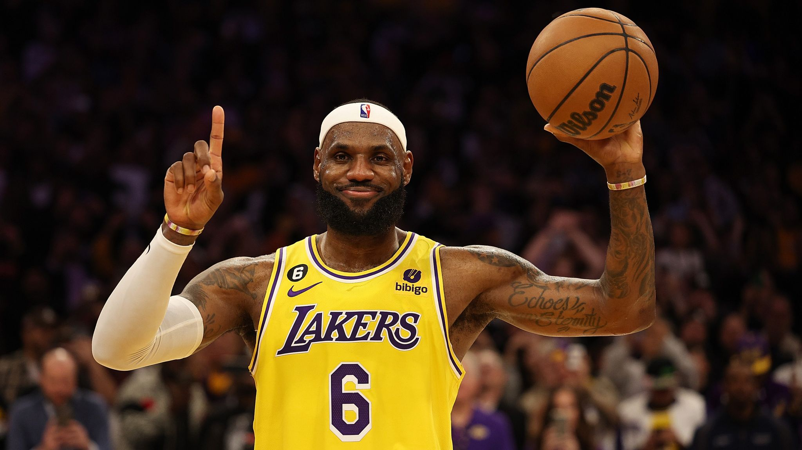

James in the space of 20 years has achieved a lot as a basketball player here are some the things he achieved.
James is currently the all-time leading scorer in NBA history.

James is ranked fourth in career assists.
James has won four NBA championships(two with the Heat, one each with the Lakers and the Cavaliers) in which he has competed in 10 NBA Finals.
James has four MVP awards, four Finals MVP awards and two Olympic Medals.
James has been named an All-Star 19 times, selected to the All-NBA Team 18 times(including 13 First Team Selections) and the All-Defensive Team six times.
James being a runner-up for the NBA Defensive Player of the Year Award twice in his career.
Lebron's act outside sports
Off the court, James has accumulated more wealth and fame from numerous endorsements contracts. He has been featured in books, documentaries(including winning two Sport Emmy Awards as an executive producer) and played a role in the sports film : Space Jam: A New Legacy. James is a part-owner of Liverpool FC ( a football club) and he is in charge of the LeBron Jmaes Family Foundation, which opened an elementary school, housing complex, retail plaza and medical center in Akron.